Run First Trino Query
This is an example to run queries to Trino through Chango Trino Gateway.
Create Cluster Group
First, you need to create Cluster Group in Trino Gateway.
Go to Settings -> Trino Gateway. Click Create Cluster Group in Cluster Groups section.
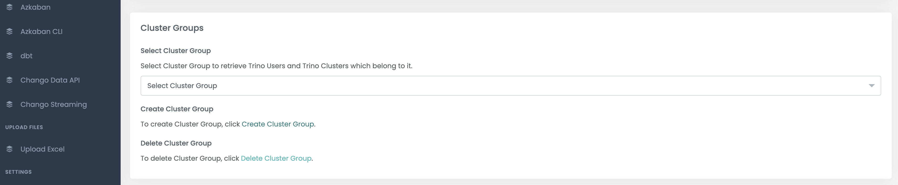
And, enter cluster group name bi.
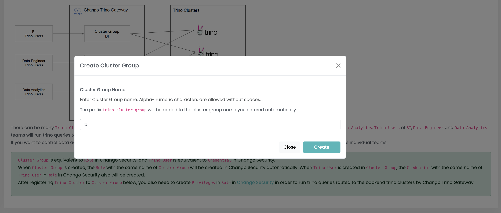
Create Trino User and Register Trino Cluster
In order to create trino user and register trino cluster, first select cluster group created before. 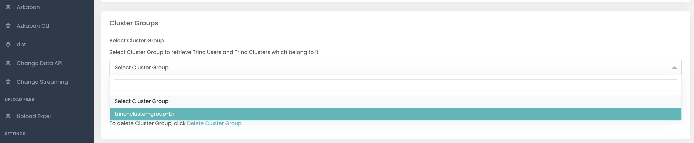
Click Create Trino User in Trino Users section, and enter user name with password.
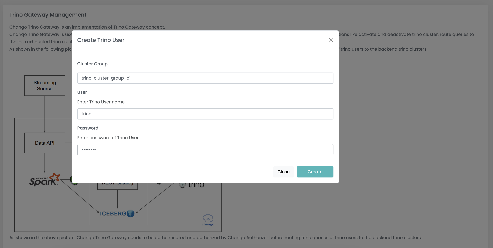
To register trino cluster, click Register Trino Cluster in Trino Clusters section.
Select trino cluster which trino queries will be routed to.
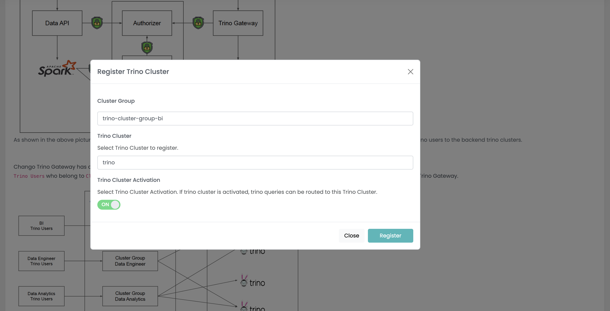
Create Privileges
To add privileges to the cluster group, go to Settings -> Security. And select role in Roles section.
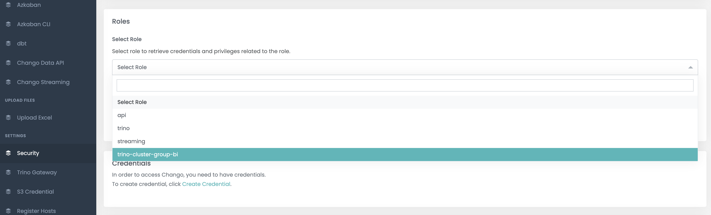
Add privilege of * for READ type.
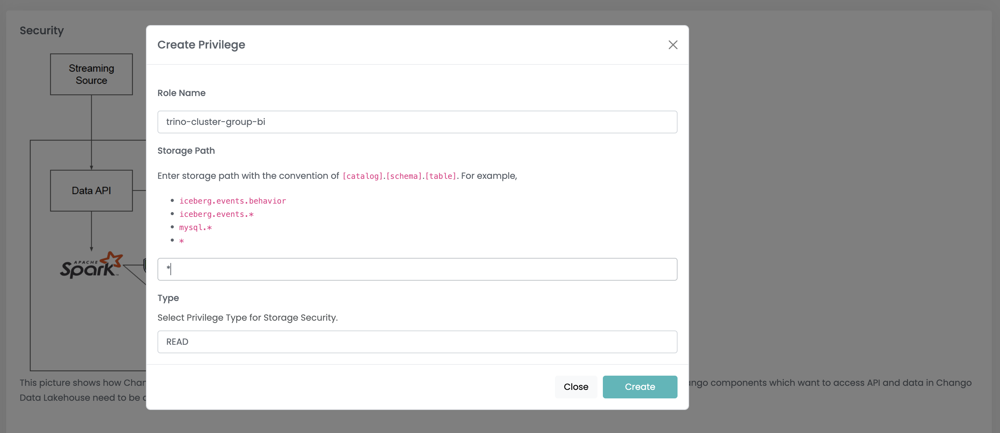
Add privilege of * for WRITE type.
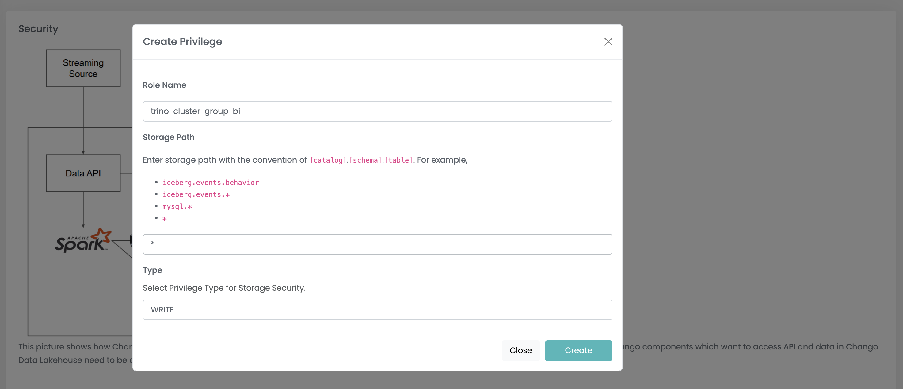
* means all data access to Chango is allowed.
Get Endpoint of Chango Trino Gateway
You need endpoint of Chango Trino Gateway to which clients will connect to run queries.
Go to Components -> Chango Trino Gateway. Get the endpoint in Endpoint section.
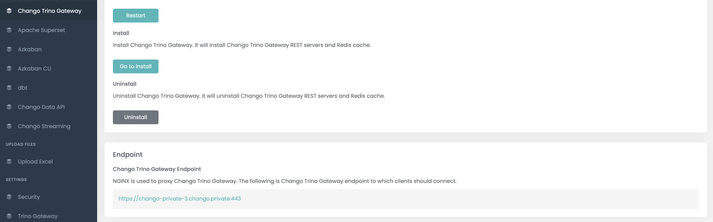
Run First CTAS Query with Superset
To run queries to trino, Superset will be used.
Login to Superset
To move to Superset UI, go to Components -> Apache Superset. Click UI URL to move to Superset UI.
First, login as admin with default password SupersetPass1#.
Add Trino Database
You need to add trino database in superset.
You need to enter trino url in SQLAlchemy URI * with the following convention.
chango-private-3.chango.private:443 with your trino gateway endpoint without https://.
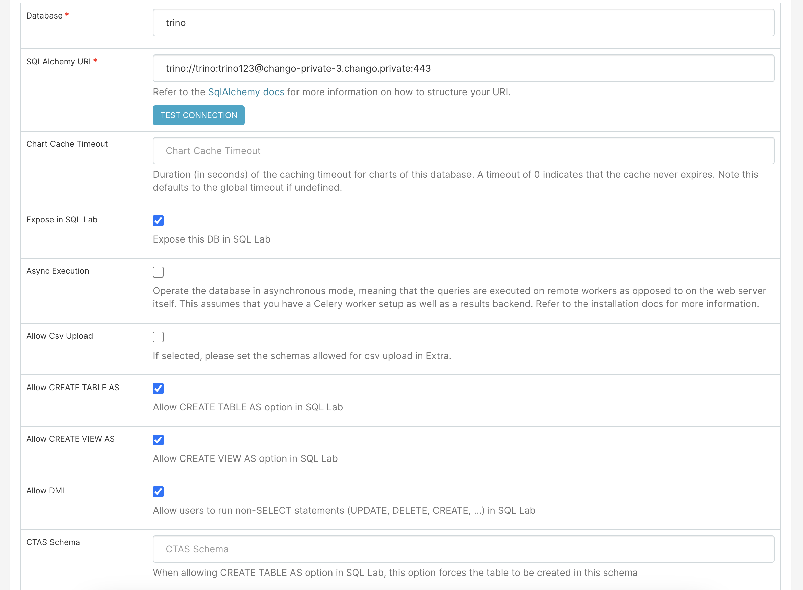
And you need to add the following in Extra to disable TLS validation.
{
"metadata_params": {},
"engine_params": {
"connect_args":{
"http_scheme": "https",
"verify": false
}
},
"metadata_cache_timeout": {},
"schemas_allowed_for_csv_upload": []
}
Check the options of Allow CREATE TABLE AS, Allow CREATE VIEW AS, Allow DML.
Finally, press Save.
Run CTAS Query
Run CTAS query which selects rows from tpch.sf1000.lineitem table and insert them to new created iceberg table iceberg.iceberg_db.test_ctas.
-- create schema.
CREATE SCHEMA IF NOT EXISTS iceberg.iceberg_db;
-- ctas.
CREATE TABLE IF NOT EXISTS iceberg.iceberg_db.test_ctas
AS
SELECT
*
FROM tpch.sf1000.lineitem limit 1000
;
And select rows from created iceberg table.
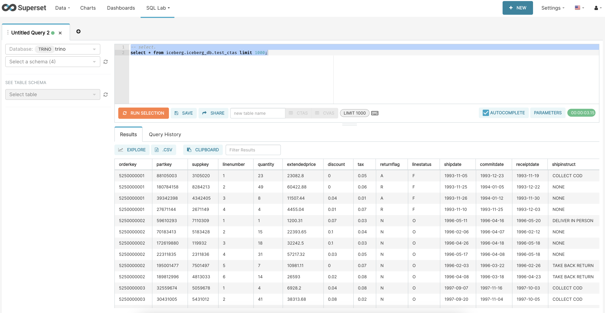Congratulations!